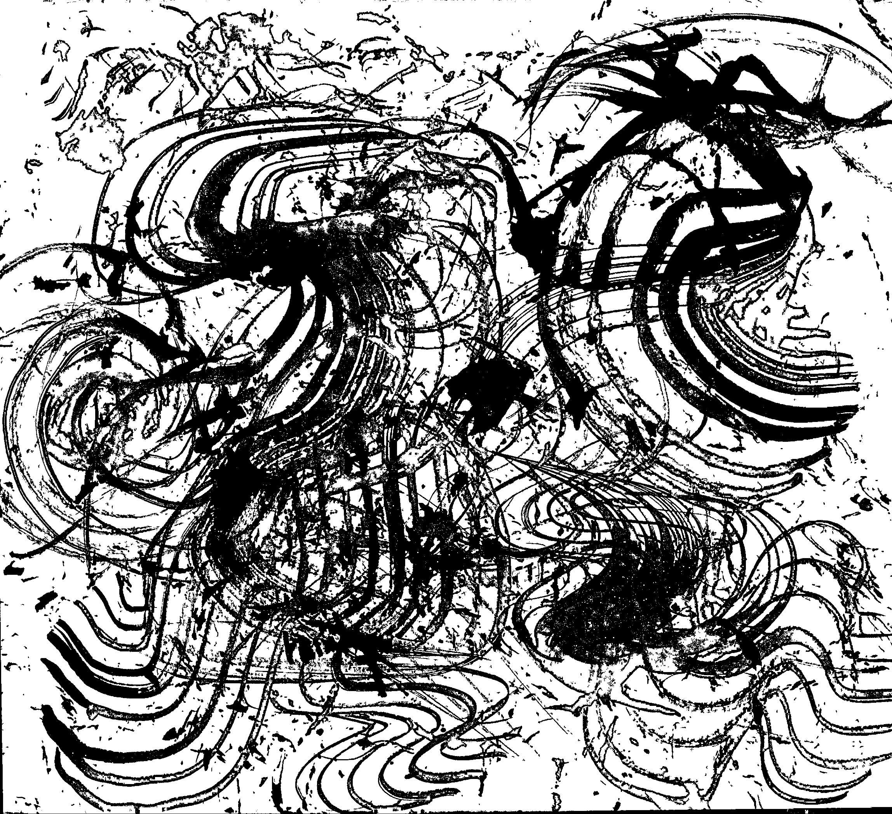

Most often the paper, the ink, the fabric of the mounting will possess a certain look of antiquity, and this look of antiquity will strike just the right balance with the darkness of the alcove and room.
We have all had the experience, on a visit to one of the great temples of Kyoto or Nara, of being shown a scroll, one of the temple's treasures, hanging in a large, deeply recessed alcove. So dark are these alcoves, even in bright daylight, that we can hardly discern the outlines of the work; all we can do is listen to the explanation of the guide, follow as best we can the all-but invisible brush strokes, and tell ourselves how magnificent a painting it must be. Yet the combination of that blurred old painting and the dark alcove is one of absolute harmony. The lack of clarity, far from disturbing us, seems rather to suit the painting perfectly.
For the painting here is nothing more than another delicate surface upon which the faint, frail light can play; it performs precisely the same function as the sand-textured wall. This is why we attach such importance to age and patina. A new painting, even one done in ink monochrome or subtle pastels, can quite destroy the shadows of an alcove, unless it is selected with the greatest care.
A Japanese room might be likened to an inkwash painting, the paper-paneled shoji being the expanse where the ink is thinnest, and the alcove where it is darkest. Whenever I see the alcove of a tastefully built Japanese room, I marvel at our comprehension of the secrets of shadows, our sensitive use of shadow and light. For the beauty of the alcove is not the work of some clever device. An empty space is marked off with plain wood and plain walls, so that the light drawn into it forms dim shadows within emptiness.